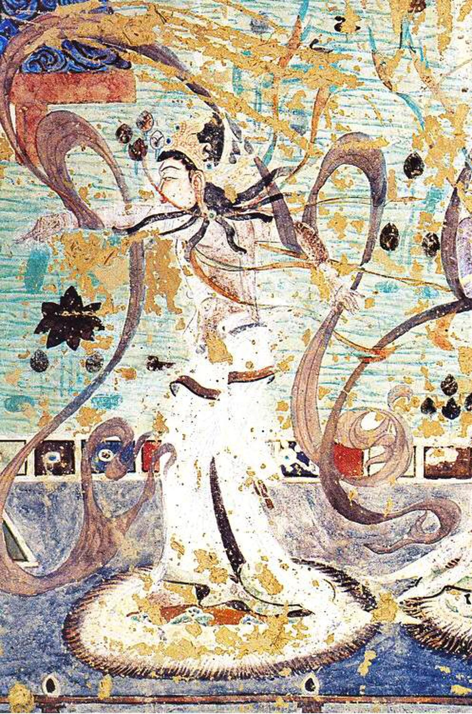
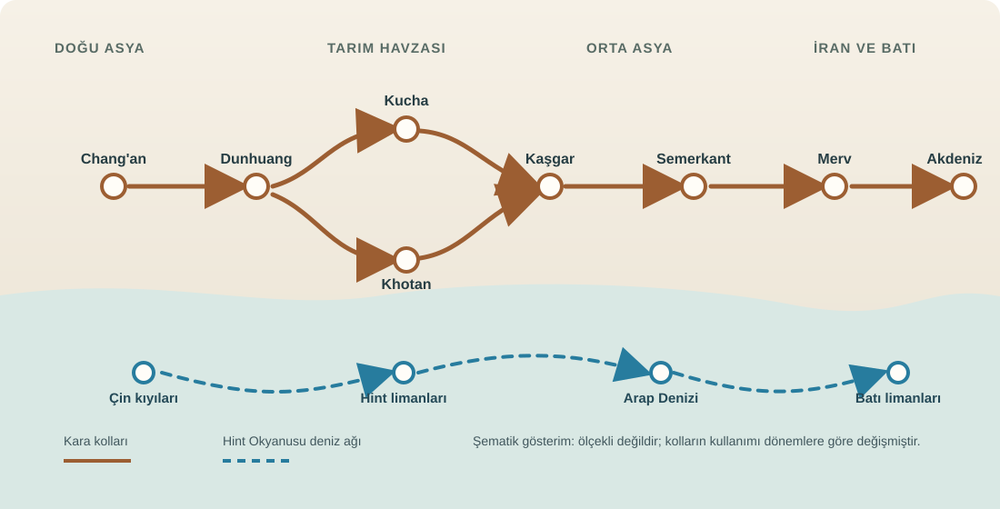

İpek Yolu, tek bir yolun ya da tek bir imparatorluğun hikâyesi değildi. Çin'den Orta Asya'ya, İran'dan Akdeniz'e uzanan kara ve deniz ağları farklı dönemlerde birbirine eklenip ayrıldı. İpek bu ağlarda değerliydi; ama aynı güzergâhlarda dinî metinler, sanatçılar, elçiler, zanaatkârlar ve hastalıklar da yol aldı. Bu yüzden İpek Yolu'nu yalnızca ticaret değil, insanların birbirini dönüştürdüğü bir temas alanı olarak okumak gerekir.[1][2]
Tek bir yol değil: dallanan bir Avrasya ağı
Bugün “İpek Yolu” dediğimiz şey, antik çağda tabelalarla işaretlenmiş tek bir ana cadde değildi. Güzergâhlar, dağ geçitleri, vahalar, siyasi sınırlar, savaşlar ve mevsimler değiştikçe farklılaştı. Çin'in başkenti Chang'an'dan batıya çıkan kervanlar Dunhuang'da Tarım Havzası'nın kuzey ve güney kollarına ayrılabiliyor; Kaşgar ve Orta Asya kentlerinden İran'a, oradan Akdeniz limanlarına uzanabiliyordu. Hindistan ve Hint Okyanusu üzerinden geçen deniz ağları da bu geniş bağlantıların parçasıydı.[1][3]
İpek, Çin'den batıya giden önemli mallardan biriydi; ancak atlar, cam eşyalar, baharatlar, metaller, kâğıt, tekstil ve değerli taşlar da farklı yönlerde taşındı. Üstelik mallar çoğu zaman baştan sona aynı tüccarla gitmedi: Bir kentte el değiştirdi, vergilendirildi, yeniden paketlendi ve başka bir kervanla yola devam etti. “Çin ile Roma doğrudan sürekli ticaret yaptı” gibi bir resim bu aracı halkaları görünmez kılar. Partlar, Soğdlar, Kuşanlar ve vaha kentlerinin toplulukları, uzak bölgeleri birbirine bağlayan etkin aktörlerdi.

Yolların taşıdığı fikirler: Budizm'den duvar resimlerine
İnsanlar bir yere yalnızca mal satmak için gitmez. Rahipler, hacılar, çevirmenler ve elçiler de kervan kentlerinde konakladı. Budizm Hindistan'dan Orta Asya'ya, oradan Çin'e ve daha doğuya yayıldı; fakat bu, bir inancın hiç değişmeden tek yönde taşınması değildi. Metinler farklı dillere çevrildi, yerel topluluklar öğretileri kendi kavramları ve sanat gelenekleriyle yorumladı. Dunhuang'daki Mogao Mağaraları'nda biriken duvar resimleri ve el yazmaları, bu karşılaşmaların yüzyıllar boyunca nasıl katmanlaştığını gösterir.[2][4]
Sanat da bu etkileşimi görünür kılar. Mogao'daki dansçı figürleri, müzisyenler ve farklı dönemlerde eklenen tasvirler, tek bir “saf” üslubun değil, hareketli bir sınır dünyasının ürünüdür. Çin, Orta Asya, İran ve Hindistan kökenli motifler karşılaştıkça sanatçılar yalnızca kopyalamadı; yeni biçimler üretti. Bu aktarımın her ayrıntısını tek bir yolcuya veya tek bir tarihe bağlamak mümkün değil. Mağaralar, daha çok, uzun süreli temasların bıraktığı izleri birlikte okumamıza yardım eder.[4]
Ticaretle birlikte diller ve inançlar da dolaştı. Soğdca, Orta Asya'da tüccarlar ve topluluklar arasında kullanılan önemli dillerden biriydi. Budist metinlerin yanı sıra Maniheizm ve Doğu Hristiyanlığı gibi inançlar da farklı dönemlerde bu ağların kentlerinde karşılık buldu. Ancak bu aktarımı, bir dinin hiç değişmeden bir kıtadan ötekine taşınması gibi düşünmemek gerekir: Yerel yönetimler, manastırlar, çeviri faaliyetleri ve göçmen topluluklar inançların nasıl benimsendiğini ve yorumlandığını etkiledi.
Kervanları kimler yürüttü?
Yolları yalnızca hükümdarlar ve ordular kurmadı. Orta Asya'da, özellikle Soğdiana çevresinden çıkan Soğd tüccarları, Çin'den İran'a uzanan pazarlarda ticaret yaptılar; bazı kentlerde kalıcı topluluklar oluşturdular. Belgeler, onların sadece mal alıp satmadığını; farklı diller, yerel yöneticiler ve uzak aile bağları arasında aracılık ettiğini gösteriyor. Bu toplulukları “tüm İpek Yolu'nu yöneten tek tüccar halk” diye sunmak doğru olmaz, ama Avrasya bağlantılarının işleyişinde önemli bir rol oynadılar.[3]
Kervan hayatı da romantik bir yol hikâyesinden ibaret değildi. Su ve yem bulunmayan uzun geçitler, haydutluk, vergi ve gümrükler, siyasi çatışmalar, hastalık ve hava koşulları yolculuğu kesintiye uğratabiliyordu. Bu nedenle tüccarlar ve elçiler, güzergâh bilgisini, güvenilir konaklama noktalarını ve yerel ortakları önemserdi. Vaha kentleri sadece mola yeri değil; haberlerin, fiyatların, dillerin ve siyasi gelişmelerin buluştuğu merkezlerdi.
Salgınlar da hareketli dünyadan bağımsız değildi
İnsanların ve malların hızla dolaştığı ağlar, hastalıkların yayılması için de temas fırsatlarını artırabilirdi. Ancak bir salgının “İpek Yolu'nda tek bir kervanla başladığını” kanıtlamak çoğu zaman mümkün değildir. Patojenler insanlarla, hayvanlarla ve parazitlerle taşınabilir; kara güzergâhlarının yanında limanlar, gemiler, ordular ve yerel hareketlilik de önemlidir.
Geç Antik Çağ'da 541'de başlayan ve sonraki yüzyıllarda tekrar eden Justinianus vebası, Avrupa ve Akdeniz dünyasında görülen ilk veba pandemisi olarak bilinir. Antik DNA çalışmaları, bu dönemde Yersinia pestis bakterisinin Avrupa'daki farklı örneklerini ortaya koydu; ancak salgının tek bir başlangıç noktası ve bütün güzergâhları konusunda araştırmalar sürüyor. Bu nedenle onu yalnızca tek bir kara yoluna bağlamak doğru değildir.[5]
14. yüzyıldaki Kara Veba içinse Orta Asya'dan önemli bir kanıt var. Issık Gölü yakınındaki Kara-Djigach ve Burana mezarlıklarından çıkarılan 1338–1339 tarihli kalıntılarda yapılan antik DNA analizleri, veba bakterisinin sonraki büyük çeşitlenmesiyle yakından ilişkili bir suşu gösterdi. Spyrou ve çalışma arkadaşları bu bulguları, ikinci veba pandemisinin erken 14. yüzyılda Orta Avrasya'da ortaya çıktığı görüşünü destekleyen kanıtlar olarak yorumladı. Bu çalışma, salgının oradan Avrupa'ya hangi kervanla ve hangi tek güzergâhtan ulaştığını kanıtlamaz; fakat Orta Asya'yı tartışmanın dışında bırakan basit köken anlatılarını da geçersiz kılar. Karadeniz limanları ve Akdeniz bağlantıları, salgının daha geniş bir coğrafyaya yayılmasında rol oynayan hareketlilik ağlarıydı.[6]
İmparatorluklar yolu açtı, vergilendirdi ve sınırladı
Bir güzergâhın çalışması için yalnızca tüccarların cesareti yetmezdi. Geçitlerin denetimi, güvenlik, konaklama, vergi ve diplomasi; kervanların hangi koldan gideceğini etkilerdi. Buna rağmen hiçbir imparatorluk, Çin'den Akdeniz'e uzanan ağın tamamını yüzyıllar boyunca yönetmedi. Farklı devletler belirli dönemlerde bazı bölümleri denetledi; aradaki alanlarda yerel krallıklar, kentler ve topluluklar güç sahibiydi.[1][2]
MÖ 2. yüzyılda Zhang Qian'ın batıya gönderilmesi, Han sarayının Orta Asya'yla diplomatik ve siyasi temasını genişletti. Bu temasların öncesinde de bölgesel alışveriş vardı; elçilikler tek başına “yolu icat etmedi.”
Kuşan yönetimi Baktriya ile Kuzey Hindistan arasında farklı kültürlerin kesiştiği bir alanı yönetti. Partlar ve daha sonra Sasaniler, İran ve Mezopotamya üzerinden geçen batı bağlantılarında etkiliydi.
Tang hanedanı bazı Orta Asya koridorlarında nüfuz kurdu. 13. yüzyıldaki Moğol egemenliği geniş alanları tek siyasi çatı altında birleştirerek bazı yolculukları kolaylaştırdı; bu, her yerde kesintisiz barış veya güvenlik olduğu anlamına gelmiyordu.
Roma ile Han Çin'i arasında ipek ve başka mallar ulaştı; fakat ürünlerin çoğunun aracı topluluklar ve çok sayıda el değişimi üzerinden taşındığını unutmamak gerekir. Sınır siyasetinde Roma ile Partlar arasındaki rekabet, batıya giden koridorları etkileyebiliyordu; doğu ve batı imparatorlukları aynı yolu aynı anda ve doğrudan denetlemiyordu. İpek Yolu bu nedenle bir imparatorluğun inşa ettiği tek bir altyapıdan çok, farklı güçlerin kesiştiği ve pazarlık ettiği bir alandı.
Yüzyıllara yayılan kısa bir zaman çizelgesi
İpek Yolu'nun asıl mirası: karşılaşmaların kendisi
İpek Yolu'nu sadece “Doğu'nun Batı'ya mal sattığı yol” diye anlatmak, bu ağları mümkün kılan insanları ve dönüştürücü karşılaşmaları eksik bırakır. Budist metinler çevrildi; sanatçılar yeni biçimler denedi; tüccarlar farklı para ve hukuk düzenleri arasında çalıştı; imparatorluklar geçitleri ve vergileri denetlemeye uğraştı. Aynı hareketlilik, insanları ve hastalıkları da uzak topluluklarla karşı karşıya getirdi.
Bu ağın tarihi tek bir yükseliş ya da altın çağ öyküsü değil. Bazı kollar önem kazanırken başkaları geriledi; siyasi sınırlar değişti, deniz ticareti büyüdü ve yerel topluluklar yeni koşullara uyum sağladı. İpek Yolu'na bakarken sorulacak iyi soru yalnızca “Ne taşındı?” değil; “Kim taşıdı, kim kazandı, kim aracılık etti ve bu karşılaşmalar insanları nasıl değiştirdi?” sorusudur.
Kaynaklar ve görsel bilgisi
- Valerie Hansen, The Silk Road: A New History, Oxford University Press, 2012. İpek Yolu'nu tek bir koridor değil, yerel topluluklar ve belgeler üzerinden okunması gereken tarihsel bir ağ olarak ele alır. Oxford University Press kitap kaydı.
- UNESCO, “About the Silk Roads”; University of Washington, Silk Road Seattle. Avrasya boyunca farklı güzergâhlar ve kültürel etkileşim üzerine başvuru kaynakları.
- Étienne de la Vaissière, Sogdian Traders: A History, Brill, 2005. Orta Asya Soğd tüccar topluluklarının ticaret ve kültürel aracılıktaki rolü.
- The Metropolitan Museum of Art, “The Silk Road”; UNESCO World Heritage Centre, “Mogao Caves”. Vaha kentleri, sanat ve kültürel aktarım için başvuru kaynakları.
- A. Keller ve diğerleri, “Ancient Yersinia pestis genomes from across Western Europe reveal early diversification during the First Pandemic (541–750),” Proceedings of the National Academy of Sciences, 116(25), 2019, s. 12363–12372. DOI.
- M. A. Spyrou ve diğerleri, “The source of the Black Death in fourteenth-century central Eurasia,” Nature, 606, 2022, s. 718–724. Issık Göl çevresindeki 1338–1339 tarihli mezarlıklardan elde edilen antik DNA bulguları. DOI.
- Mogao Mağarası 220'de dansçı duvar resmi, Erken Tang dönemi, sanatçısı bilinmiyor. Wikimedia Commons kaydı, Public Domain; görsel WebP biçimine dönüştürülmüştür.
Salgınların kökeni ve yayılma güzergâhları, antik DNA ve tarihsel belgeler birlikte değerlendirilerek anlatılmıştır. Bu bulgular tek bir kervanın izlediği yolu kanıtlamaz; “İpek Yolu” da farklı dönemlerde değişen bağlantıların genel adıdır.